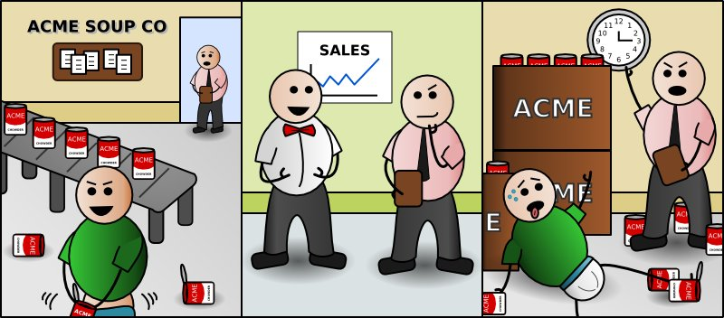

Nerd Theater
Archives
About
Science, Farts, and Whimsey
Can-Do Attitude
July 24, 2009

Yes, he's fucking a can of soup.
Michelle
: My, what a generous bulge you have bequeathed upon your soup f-er.
Mike
: He stuffs.
Alex
: I'm running out of things to say.
Michelle
: Okay, WHY is there a guy f-ing cans of soup in a soup factory? Where did he come from?
Mike
: I dunno. Maybe he got fired from the last soup factory?
Alex
: I am so sad that our comic rides on the wings of masturbation/ soup jokes
Mike
: I curtail to the needs of our biggest fans.
Anonymous Asshole
: That's how soup is made, right? And why I never eat Cream of Chicken.
Alan
: I love this comic, this is vintage Nerd Theater filth.
Mike
: Weird, that's the same reason my wife says she loves me...
← Previous comic
Next comic →
Mike: He stuffs.
Alex: I'm running out of things to say.
Michelle: Okay, WHY is there a guy f-ing cans of soup in a soup factory? Where did he come from?
Mike: I dunno. Maybe he got fired from the last soup factory?
Alex: I am so sad that our comic rides on the wings of masturbation/ soup jokes
Mike: I curtail to the needs of our biggest fans.
Anonymous Asshole: That's how soup is made, right? And why I never eat Cream of Chicken.
Alan: I love this comic, this is vintage Nerd Theater filth.
Mike: Weird, that's the same reason my wife says she loves me...